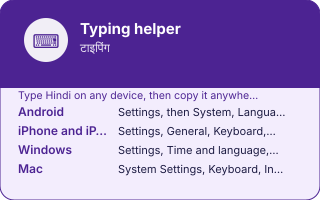

EkGuru › Learn Hindi › Tools › Typing helper
Type in Hindi without a Hindi keyboard
🔊 Tap any speaker button to hear Hindi spoken. Too fast or slow? Use the speed button at the bottom-right of the page.
Type the sound in English letters and get Devanagari. This is how most Hindi is typed, including by people who have spoken it all their lives — nobody memorises the InScript layout unless they have to.
This tool needs JavaScript. Without it, the guide below explains how to set up a Hindi keyboard on your own device, which is the better long-term answer anyway.
Set it up properly on your own device
A web page is fine for a word or two. If you are going to type Hindi regularly, spend five minutes adding the keyboard instead:
- Android — Settings, then System, Languages and input, then add Hindi. Google's keyboard includes a transliteration mode that works exactly like the box above.
- iPhone and iPad — Settings, General, Keyboard, Keyboards, Add New Keyboard, Hindi (Transliteration).
- Windows — Settings, Time and language, Language and region, add Hindi. Choose the phonetic layout rather than InScript unless you plan to learn a new layout.
- Mac — System Settings, Keyboard, Input Sources, add Hindi (QWERTY) for phonetic typing.
Why transliteration is genuinely hard
Roman letters cannot represent Hindi unambiguously, and no amount of cleverness fixes that. Kal is कल and also काल. Bhaav is भाव and also भाऊ depending on who is typing. Vowel length is the usual casualty, because English spelling does not mark it. Any tool, including this one, is making an educated guess from the most common spelling — so check names and anything important with a person.
Devanagari is easy to get slightly wrong when it is typed by hand — a missing matra, the wrong nukta. If something here looks off to you, trust a native speaker over this page and please tell us so it gets fixed — it takes a moment and a real person reads it. Romanised spellings are a guide to the sound, not a standard: there is no single official way to write Hindi in Latin letters.
Questions
Type the sound in English letters and let a transliteration engine convert it. That is what this page does: type namaste and you get नमस्ते. It is how most Hindi is typed in India, including by native speakers.
No. Romanised Hindi is ambiguous — kal is both कल (yesterday/tomorrow) and काल (time). The tool offers alternatives where they exist, and you should check anything important with a native speaker.
Partly. The page falls back to a built-in rule-based converter when the network is unavailable. The offline version is measurably less accurate on vowel length — it is a reasonable fallback, not an equal one.
Add the Hindi keyboard in your phone's language settings. On both Android and iOS it includes a transliteration mode that works exactly like this page, and it is worth setting up if you are going to type Hindi regularly.
Transliteration gets Devanagari onto a screen. It does not teach you which letter is which, and learners who rely on it often cannot read what they just produced. The alphabet explorer takes about two weeks and makes this tool a convenience rather than a crutch.
Find a Hindi Guru Free Hindi guidesNext
Typing helper, in one picture
Every number and every word on this plate is taken from the tool below it, not drawn by hand: what you see here is what the tool holds.
